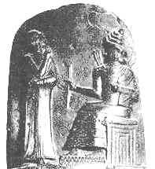

 |
Верхушка стеллы с Кодексом Хамураппи (аморитский царь Вавилона, живший приб.1792-1750 гг. до х.э.), найденная в Сузах в 1902 году х.э. |
"История Востока" (Восток в древности)
 Первый период
истории Древнего мира
Первый период
истории Древнего мира  Глава I. Возникновение земледелия, скотоводства
и ремесла. Общие черты первого периода истории
Древнего мира и проблема путей развития
Глава I. Возникновение земледелия, скотоводства
и ремесла. Общие черты первого периода истории
Древнего мира и проблема путей развития
- 1. Религия
- 2. Архитектура
- 3. Скульптура
- 4. Рельеф
- 5. Письменность
- 6. Литература
- 7. Наука
- Второй период
истории Древнего мира
- Глава XIII. Общие черты второго периода древней
истории
- Глава XIV. Новоассирийская держава
- Глава XV. Нововавилонская держава
- Глава XVI. Страны Иранского нагорья и юга Средней
Азии в первой половине I тысячелетия до х.э.
Мидийское царство. Авеста. Зороастризм
- 1. Области Иранского плато к началу исторической эпохи. Место Ирана в истории древнего Востока. "Иран" и "иранцы"
- 2. Западный Иран в начале I тысячелетия до х.э.
- 3. Ассирийские и урартские завоевания в Иране
- 4. Маннейское царство
- 5. Элам в первой половине I тысячелетия до х.э.
- 6. Происхождение иранских племен и их распространение по территории Ирана
- 7. Авеста и ранний зороастризм
- 8. Социально-экономический строй древнеиранских племен
- 9. Возникновение независимой Мидии. Мидийская держава
- 10. Возникновение кочевого скотоводства и распространение кочевых племен в горных районах Ирана
- Глава XVII. Ахеменидская держава
- Глава XVIII. Урарту, Фригия, Лидия
- Глава XIX. Финикия и финикийцы в конце II-I
тысячелетии до х.э.
- 1. Финикия
- 2. Финикийская колонизация
- 3. Карфаген
- Глава XX. Палестина в первой половине I
тысячелетия до х.э. Царства Израиля и Иудеи
- Глава XXI. Новое царство в Египте и поздний Египет
- Глава XXII. Древняя Индия
- Глава XXIII. Китай во второй половине I тысячелетия
до х.э. - первые века христианской эры. Империи
Цинь и Хань (конец III в. до х.э. - начало III в. х.э.)
- Глава XXIV. Культура древнего Китая
- Глава XXV. Корея в древности
- Эллинизм на
Востоке
- Глава XXVI. Предэллинизм на Востоке. Послепленная
Иудея
- Глава XXVII. Александр и его преемники на Востоке
- Глава XXVIII. Эллинистические государства в Передней
Азии
- Глава XXIX. Закавказье и сопредельные страны в
период эллинизма
- Глава XXX. Парфия и Греко-Бактрийское царство
- Глава XXXI. Эллинистический Египет
- Глава XXXII. Восточные провинции Римской империи
- Глава XXXIII. Коренные перемены в мировоззрении
("осевое время")
- 1. Мировоззрение и мироощущение человека в древности
- 2. Идеологические перемены
- 3. Проблема изменений мироощущения в истории
- 4. Проповедь Заратуштры
- 5. Новые явления в яхвизме-иудаизме в I тысячелетии до х.э.
- 6. Религиозно-философские учения Индии
- 7. Религиозно-философские учения Китая
- 8. Возникновение христианства
- Заключение
- Рекомендуемая
литература
- Указатель
имен
- Указатель
географических названий
- Указатель
терминов и названий народов древности
Подготовка электронного текста книги завершена в марте 1999 года.
|
|
06/10/20 - 03:48 |